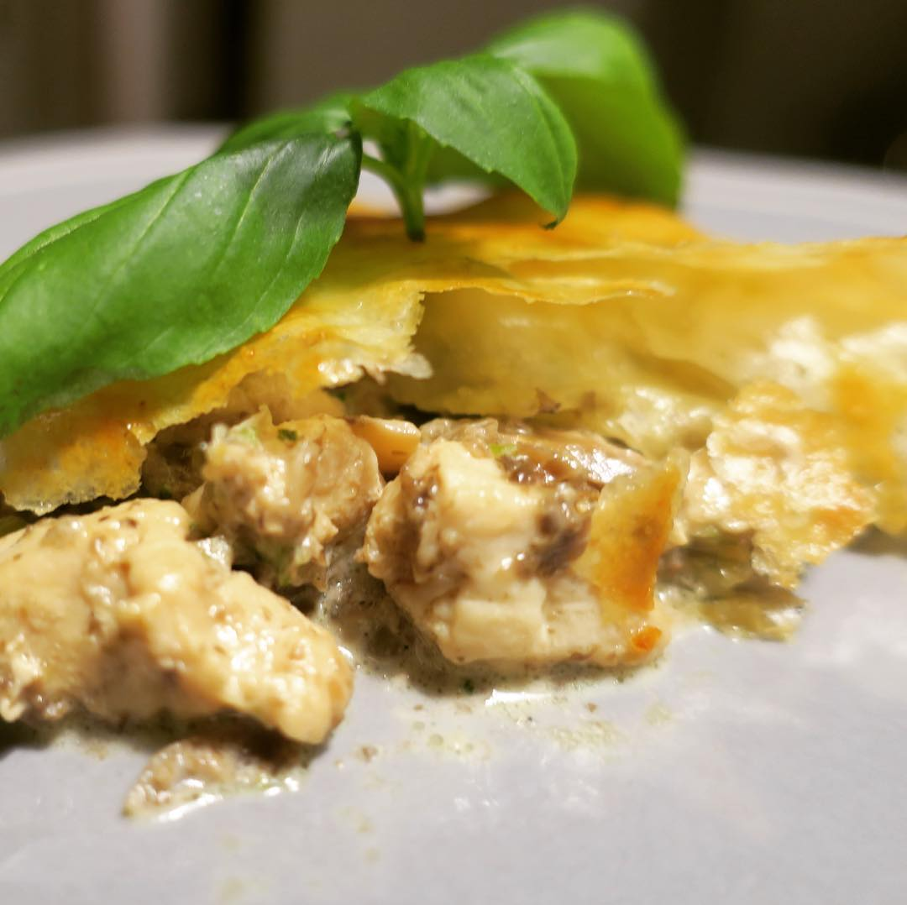

Kurací koláč podľa @mycake.sk — Normy Jedál
Pripravte svojim blizkym tento netradicny slany kolac so stavnatym maskom a chrumkavym cestom na povrchu🥧Navyse vsetko pripravim v jednej panvici, ziadne dalsie riady😉#chickenpie #chicken #potpie #pie #dinner #homecookedmeal #recipeideas #recipe #nomnomnom #kuracikolac #kolac #vecera #dnesjem #dnesvarim #vkuchyni #viemcojem #domacejedomace #receptnablogu #mycake